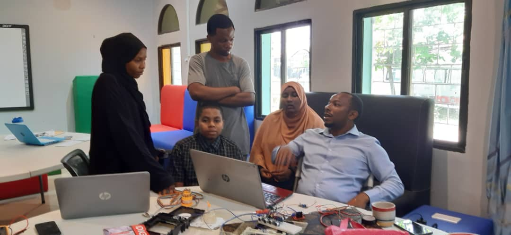

The Sustainable Savers' actionable challenge for 2023 is "COASTAL WASTE." During their field study at Nungwi, they observed various types of waste, including plastic waste, decomposable garbage, rubbish, and wastewater, which are often mixed together. Additionally, natural factors such as monsoon winds and ocean temperature contribute to waste generation.
Through observations and engagement with the local community and stakeholders, evidence provides ground truth on the existence of different types of waste including garbage, plastics, rubbish, glass, clothing waste, paper, and other solid waste generated by the local community and tourists. The existence of these wastes affects human health and the environment. After gathering observational evidence and data, we seek to address potential solutions to the challenges posed by coastal waste issues.
